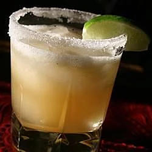

Beer Margarita

Who would believe that beer would be the perfect solution to eradicating fluorescent green margaritas? Well, it is!
Best to use not-so-micro brews to avoid an overpowering beer flavor. Use the limeade can to measure the ingredients, and adjust with extra water if the mixture seems too sweet. Straining the pulp is always a good idea, unless, of course, you like pulp!
Ingredients
- 1 (12 fluid ounce) can frozen limeade concentrate
- 12 fluid ounces tequila
- 12 fluid ounces water
- 12 fluid ounces beer
- ice
- 1 lime, cut into wedges
- Pour limeade, tequila, water, and beer into a large pitcher. Stir until well-blended, and limeade has melted. Add plenty of ice, and garnish with lime wedges. Adjust with additional water, if needed.